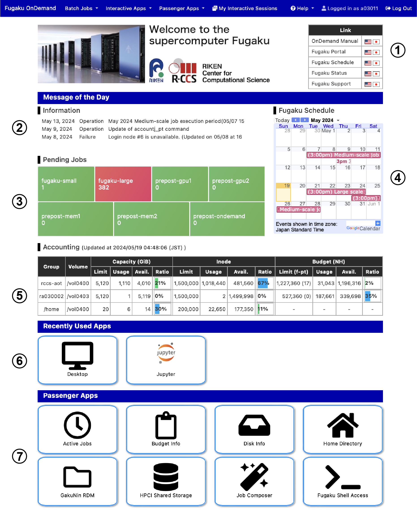

Open OnDemand on Fugaku
Overview
Open OnDemand is a web portal for using parallel computer systems via a web browser. The applications provided by Fugaku Open OnDemand are divided into the following groups.
- Batch Jobs : Real world applications that run on Fugaku
- Interactive Apps : Interactive applications that run on Fugaku and pre-post environment
- Passenger Apps : Utilities that run on the server where Open OnDemand is installed

The figure above shows the Open OnDemand dashboard. From the top navigation bar, you can launch the applications. The meanings of the numerical items in the figure are as follows.
- External links
- The latest information of Fugaku
- Fugaku and pre-post environment queue pending status
- Fugaku operation schedule
- Disk and budget usage
- Recently used applications (up to 4)
- Passenger Apps
Batch Jobs
The following applications are available. If you have any applications you would like to add, please contact the Fugaku support site.
| Category | Application |
|---|---|
| Climate | SCALE |
| Computer Aided Engineering | FDS, FFVHC-ACE, FrontFlow (blue/X), FrontISTR, OpenFOAM (Foundation/OpenCFD) |
| Condensed Matter Physics | ALAMODE, AkaiKKR, HΦ, mVMC, OpenMX, PHASE/0, Quantum Espresso, SALMON |
| Experimental Data Processing | KIERTÄÄ |
| Molecular Dynamics | GENESIS, GROMACS, LAMMPS, MODYLAS, PIMD |
| Quantum Chemistry | ABINIT-MP, Gaussian, NTChem, SMASH |
| Quantum Simulation | braket |
Click the icon to display a web form for entering computational resources and other information. Input items differ for each application. Clicking "Submit" bottom will submit the job to Fugaku. Please refer HERE for details.
Interactive Apps
The following applications are available.
| Category | Application |
|---|---|
| Development | Remote Desktop, JupyterLab, MATLAB, VSCode, RStudio, Terminal (ttyd) |
| Profiler | NVIDIA Visual Profiler, NVIDIA Nsight Compute, NVIDIA Nsight Systems, Vampir |
| Viewer | AVS/Express, C-Tools, GaussView, Gnuplot, GrADS, ImageJ, MOLDEN, OpenMX viewer, OVITO, Paraview, PyMOL, SALMON view, Smokeview, VESTA, VMD, VisIt, XCrySDen |
| Workflow | WHEEL |
As with Batch Jobs, you can enter the computational resources and other information into the web form, click "Launch", and once the job has started on the compute node, a link to the application will be displayed. By clicking on the link, you can use the corresponding application from your web browser.

Passenger Apps
Active Jobs
You can view job information, and delete your jobs.

Budget Info
Displays the amount of budget usage for each user in the group. A theme manager can set budget limit.

Disk Info
Displays the amount of disk usage for each user in the group.

Home Directory
You can upload, download, delete, and edit files. The maximum file size for upload and download is 10GB.

File operations for cloud storage using rclone are also possible. You can set up rclone by starting Remote Desktop in Interactive Apps and running rclone or rclone-browser from the terminal. After the configuration, restart Open OnDemand (click "Help" -> "Restart Web Server" on the navigation bar) and start the Home Directory to access the configured cloud storage. Please note that Fugaku Help Desk does not support rclone settings.
GakuNin RDM
You can perform file operations on GakuNin RDM, a research data management platform provided by the National Institute of Informatics.
- Mount Path : Mount path on Fugaku (e.g. /home/rccs-aot/a00000/abc)
- RDM Node ID : A part of URL of your project in GakuNin RDM (xxx in https://rdm.nii.ac.jp/xxx/)
- ROM Token : Parsonal access token in GakuNin RDM

When clicking mount botton, a project directory in GakuNin RDM is mounted to Fugaku.
HPCI Shared Storage
You can perform file operations on HPCI Shared Storage provided by HPCI (High Performance Computing Infrastructure). To use this application, a passphrase must be issued in advance from JWT-SERVER.
HPCI ID is a string "hpcixxxxxx" (where xxxxxx is a number) displayed when the passphrase is issued on JWT-SERVER.

When clicking mount botton, a project directory in HPCI Shared Storage is mounted to Fugaku.
Shell Access
You can perform operations using a command line interface on your web browser.

Material
Note
- The temporal directory for Open OnDemand is ${HOME}/ondemand, which is automatically created. There is no problem to delete it, but it also deletes user-installed extensions in Interactive Apps and history files.
- If a problem occurs, delete ${HOME}/ondemand, or click "Restart Web Server" in "Help" on the top bar.
- Internet Explorer 11 is not supported
- If you want to use copy and paste in Remote Desktop, please use the Chrome browser.